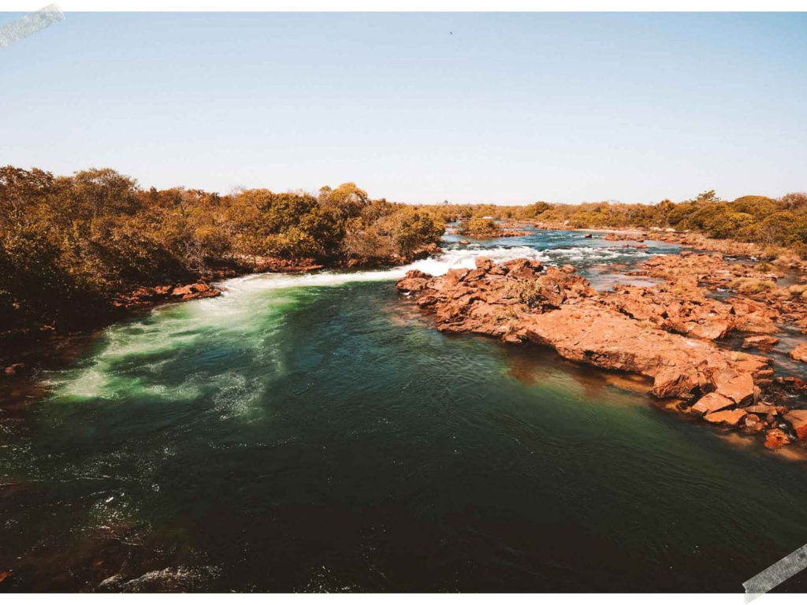

O Tocantins é o estado mais jovem do Brasil, criado em 1988, e faz parte da região Norte do país. Sua capital é Palmas, uma cidade planejada conhecida por suas avenidas largas e áreas verdes. O estado possui paisagens naturais marcadas pelo cerrado, rios e cachoeiras, além de importantes áreas de preservação ambiental, como o Parque Estadual do Jalapão, famoso por suas dunas, fervedouros e belezas naturais. A economia tocantinense baseia-se principalmente na agropecuária, agricultura e comércio. A cultura local mistura tradições sertanejas, indígenas e influências de outras regiões brasileiras.

Voltar